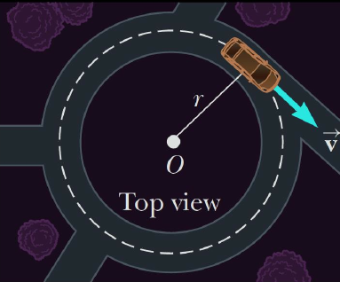
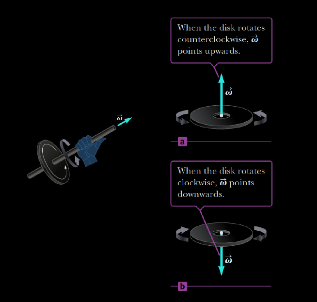
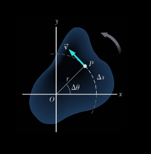
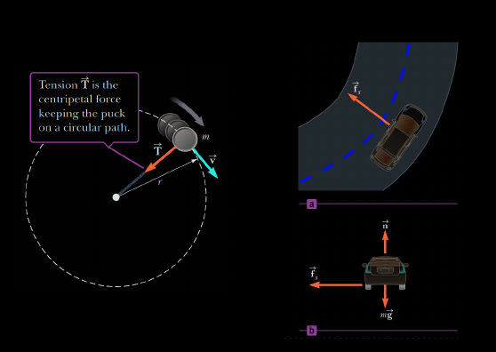

angular position (subtended by an arc length angular displacement
average angular velocity is the average rate of change of the angular displacementinstataneous angular velocitysverage acceleration during the time interval is the change in its angular speed divided by time intervalinstataneous angular acceleration is the limit of the average angular acceleration as the time interval approaches zero
direction of the angular velocity vector can be found with the Right Hand Ruledirection of the angular acceleration and the angular velocity are
speed is increasing with timespeed is decreasing with timeIf the object undergoes rotation motion about a fixed axis under a constant angular accerleration, its motion can be described with the following set of equations which are in the similar manner to the linear 1D motion with constant accerleration:

tangential velocity of a point on a rotating object equals the distance of that point from the axis of rotation multiplied by the angular velocity tangential acceleration of a point on a rotating object equals to the distance of that point from the axis of rotation multiplied by the angular accelerationvelocity vectors have the same magnitude, corresponding for the same speeddirections are different
=> There exists an accerleration vector pointing inwards (towards the center of the circle), called centripetal acceleration (center-seeking) acceleration .Its magnitude is given byPROOF
position vector moves from velocity vector has constant magnitude and its tangent to the path as it changes from velocity vector position vector position vector velocity vector and =>the two triangles are isosceles
Thus,
centripetal components of acceleration are perpendicular to each othercircular path must have a net force exerted on it that is directed toward the center of the path
{kind=link}